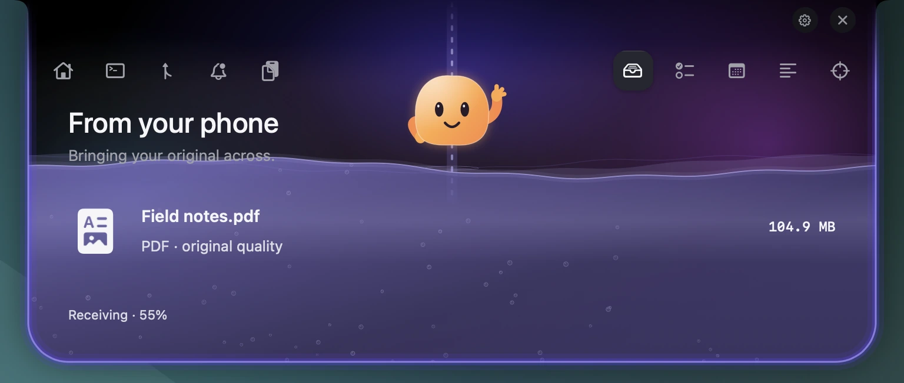
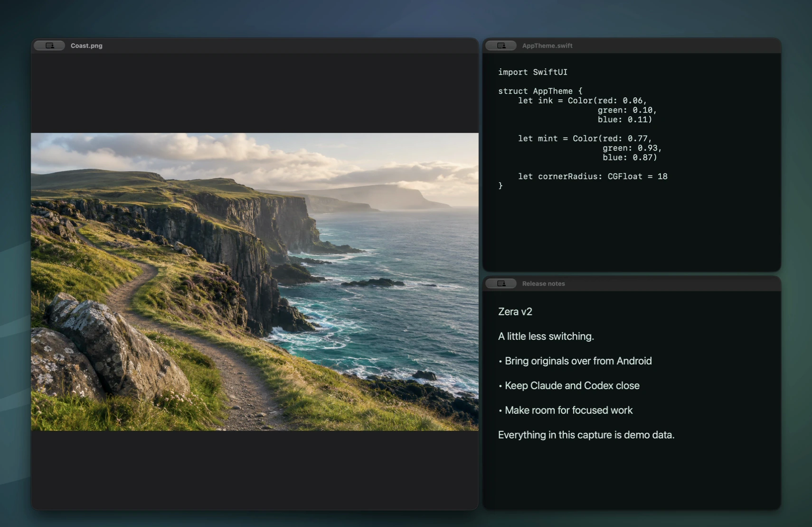

Hold. Speak. Release.
Dictation inserts into the original editable field. Choose Apple speech or on-device Murmur in guided setup; repair access in Permissions & Diagnostics.
Pick it up. Glide it across.
Your original arrives right where you need it.
macOS 13+ · Apple silicon & Intel · Android 8+ · free & open source
A photo leaves your phone and arrives as itself on your Mac. Documents find their way into Zera’s notch, where she catches them and a themed receipt fills as the bytes arrive.
Zera already contains the receiver. Install Androp on Android, pair once, then send originals over your shared Wi-Fi or phone hotspot. Files are verified before the save is confirmed.
Read the sharing guideWi-Fi at home, or your phone’s hotspot outside. Internet access is unnecessary.
Zera menu → Android sharing. Enter the six-digit code in Androp.
Use Androp’s gallery or Files tab, or Share → Androp from another app.
Source apps must export a global drag for the optional background edge overlay. All four edges are supported. Transfers use paired, unencrypted local networking; use a trusted Wi-Fi or hotspot. File size, storage and connection conditions affect transfer time.
Your agents, files, focus and day.
One native surface, with a little company.

Captured from the current Swift app with fictional demo data.
Columns, rows, a grid or one main window.
Arrange your apps around the work in front of you.

Opt in with Accessibility access. Choose your apps and shortcuts, group windows into Zera workspaces, move them between displays, or undo an arrangement. Optional visual transitions need Screen Recording. Zera workspace groups do not create macOS Spaces. Window-manager guide ↗
Dictation inserts into the original editable field. Choose Apple speech or on-device Murmur in guided setup; repair access in Permissions & Diagnostics.
Your launcher, search and useful commands, without another window to keep around.
From native controls to the liquid sharing receipt, the selected theme carries through the notch.
The complete Zera v2 walkthrough.
Kinetic captions. Smooth focus. Real window arrangements.
80 seconds · 27 captioned chapters. Home, Agents, sharing, Shelf, clipboard, tasks, focus, reviews, reminders, alerts, Teleprompter, real window arrangements, settings, export, launcher, voice preview and small everyday moments.
Mac: open the DMG, drag Zera to Applications, then launch it. For an unnotarized build, follow Apple’s first-launch approval in Privacy & Security. Android: allow installation from your download source. Install and update guide ↗
No. Phone and Mac need the same local Wi-Fi or a phone-hotspot connection. There is no cloud relay. Bluetooth and automatic physical device positioning are not implemented.
The background overlay can receive global drags that the source app exports. Support depends on the app and Android/One UI mode. Androp’s own gallery, Files tab and Share → Androp are available alternatives.
Received originals stay on the local network and save in Downloads/Androp. The transfer is paired but unencrypted. Optional Claude/Codex, GitHub, weather and other integrations have their own data flows and setup. A file is sent for analysis only when you ask. Read the data map.
Zera uses the center of the menu bar. The same screens and tools are available.
The app surfaces are fresh native captures of Zera and Androp with synthetic artwork and fictional demo data. The device framing and presentation are motion design. Transfer time varies by file and network; the film is not a performance benchmark.